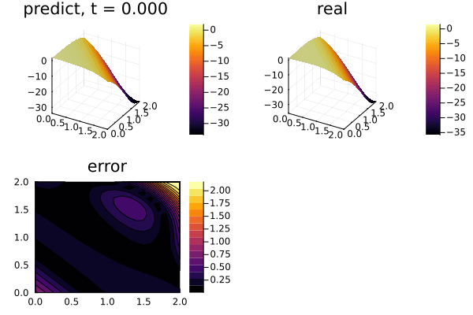

Using GPUs to train Physics-Informed Neural Networks (PINNs)
the 2-dimensional PDE:
\[∂_t u(x, y, t) = ∂^2_x u(x, y, t) + ∂^2_y u(x, y, t) \, ,\]
with the initial and boundary conditions:
\[\begin{align*} u(x, y, 0) &= e^{x+y} \cos(x + y) \, ,\\ u(0, y, t) &= e^{y} \cos(y + 4t) \, ,\\ u(2, y, t) &= e^{2+y} \cos(2 + y + 4t) \, ,\\ u(x, 0, t) &= e^{x} \cos(x + 4t) \, ,\\ u(x, 2, t) &= e^{x+2} \cos(x + 2 + 4t) \, , \end{align*}\]
on the space and time domain:
\[x \in [0, 2] \, ,\ y \in [0, 2] \, , \ t \in [0, 2] \, ,\]
with physics-informed neural networks. The only major difference from the CPU case is that we must ensure that our initial parameters for the neural network are on the GPU. If that is done, then the internal computations will all take place on the GPU. This is done by using the gpu function on the initial parameters, like:
using Lux, LuxCUDA, ComponentArrays, Random
const gpud = gpu_device()
inner = 25
chain = Chain(Dense(3, inner, σ), Dense(inner, inner, σ), Dense(inner, inner, σ),
Dense(inner, inner, σ), Dense(inner, 1))
ps = Lux.setup(Random.default_rng(), chain)[1]
ps = ps |> ComponentArray |> gpud .|> Float64ComponentArrays.ComponentVector{Float64, CUDACore.CuArray{Float64, 1, CUDACore.DeviceMemory}, Tuple{ComponentArrays.Axis{(layer_1 = ViewAxis(1:100, Axis(weight = ViewAxis(1:75, ShapedAxis((25, 3))), bias = ViewAxis(76:100, Shaped1DAxis((25,))))), layer_2 = ViewAxis(101:750, Axis(weight = ViewAxis(1:625, ShapedAxis((25, 25))), bias = ViewAxis(626:650, Shaped1DAxis((25,))))), layer_3 = ViewAxis(751:1400, Axis(weight = ViewAxis(1:625, ShapedAxis((25, 25))), bias = ViewAxis(626:650, Shaped1DAxis((25,))))), layer_4 = ViewAxis(1401:2050, Axis(weight = ViewAxis(1:625, ShapedAxis((25, 25))), bias = ViewAxis(626:650, Shaped1DAxis((25,))))), layer_5 = ViewAxis(2051:2076, Axis(weight = ViewAxis(1:25, ShapedAxis((1, 25))), bias = ViewAxis(26:26, Shaped1DAxis((1,))))))}}}(layer_1 = (weight = [0.8938124179840088 -0.12054252624511719 -0.9430485963821411; 0.019675612449645996 0.8768975734710693 -0.30815815925598145; … ; -0.3412487506866455 -0.21124958992004395 0.6319462060928345; -0.6511390209197998 -0.7475341558456421 0.5623259544372559], bias = [-0.2382509410381317, -0.47629547119140625, -0.04313825070858002, -0.38757380843162537, 0.14037597179412842, 0.3321232497692108, -0.5637972950935364, -0.2738623023033142, -0.3283822238445282, 0.1667761355638504 … 0.11288823187351227, 0.4241694509983063, -0.19697332382202148, -0.10552506893873215, 0.4704054594039917, -0.5446615219116211, -0.3079470992088318, 0.35633617639541626, -0.38094785809516907, 0.47308772802352905]), layer_2 = (weight = [0.03968937695026398 -0.05283631384372711 … -0.12101032584905624 -0.1429642289876938; 0.18482521176338196 0.16216696798801422 … -0.01593817211687565 0.08860205858945847; … ; 0.17848749458789825 0.24295401573181152 … 0.0424632653594017 -0.13159051537513733; -0.0019689190667122602 -0.2821098864078522 … 0.20212921500205994 -0.34614917635917664], bias = [-0.028901124373078346, -0.09232988208532333, 0.016017580404877663, -0.14688947796821594, -0.17542317509651184, -0.03460047394037247, -0.17691513895988464, 0.17262020707130432, -0.12798896431922913, 0.1419503390789032 … 0.03279073163866997, -0.048065900802612305, 0.11151742935180664, 0.1464749127626419, 0.023520518094301224, -0.0027386904694139957, 0.12394480407238007, 0.11086063086986542, -0.079828642308712, 0.04229390621185303]), layer_3 = (weight = [0.15529018640518188 0.22634004056453705 … 0.3268938362598419 0.1082567647099495; -0.2525289058685303 -0.18040838837623596 … 0.19916917383670807 0.1349187046289444; … ; -0.3224433958530426 0.1592247188091278 … -0.30141764879226685 -0.11703705787658691; 0.2505643963813782 0.33898669481277466 … 0.12481779605150223 0.21500840783119202], bias = [0.04414043575525284, -0.056378819048404694, 0.0654526948928833, 0.10310711711645126, 0.12361614406108856, 0.158143550157547, -0.13088572025299072, -0.19291739165782928, 0.11814753711223602, -0.10970659554004669 … 0.13547901809215546, 0.10080911964178085, -0.049297235906124115, 0.030803585425019264, -0.03746380656957626, 0.060573458671569824, 0.057966090738773346, 0.038903020322322845, -0.04243268817663193, 0.12226665019989014]), layer_4 = (weight = [0.15808351337909698 0.3340016305446625 … 0.2285420298576355 -0.08793158829212189; -0.2693271338939667 0.040656719356775284 … -0.2238926738500595 -0.05156503990292549; … ; 0.2797074615955353 0.0019974953029304743 … 0.16175466775894165 0.12826070189476013; 0.19624657928943634 0.2332223504781723 … 0.1555694192647934 0.03403749316930771], bias = [0.19226691126823425, 0.18387694656848907, -0.11745353043079376, 0.17311939597129822, 0.006078648380935192, -0.0320478193461895, 0.1526457518339157, -0.08326403796672821, -0.05765111371874809, 0.19267971813678741 … 0.12260644137859344, -0.02327587641775608, -0.16400310397148132, -0.013739061541855335, 0.18049173057079315, 0.1908593624830246, 0.0312176700681448, -0.10569047927856445, -0.11422469466924667, -0.049294449388980865]), layer_5 = (weight = [0.16992391645908356 0.2839227020740509 … 0.14887689054012299 -0.29987889528274536], bias = [-0.11113488674163818]))In total, this looks like:
using ModelingToolkit, NeuralPDE, SciMLBase, Lux, LuxCUDA, Random, ComponentArrays
using Optimization
using OptimizationOptimisers
using Optimisers: Adam
import DomainSets: Interval
using IntervalSets: leftendpoint, rightendpoint
using Plots
using Printf
@parameters t x y
@variables u(..)
Dxx = Differential(x)^2
Dyy = Differential(y)^2
Dt = Differential(t)
t_min = 0.0
t_max = 2.0
x_min = 0.0
x_max = 2.0
y_min = 0.0
y_max = 2.0
# 2D PDE
eq = Dt(u(t, x, y)) ~ Dxx(u(t, x, y)) + Dyy(u(t, x, y))
analytic_sol_func(t, x, y) = exp(x + y) * cos(x + y + 4t)
# Initial and boundary conditions
bcs = [u(t_min, x, y) ~ analytic_sol_func(t_min, x, y),
u(t, x_min, y) ~ analytic_sol_func(t, x_min, y),
u(t, x_max, y) ~ analytic_sol_func(t, x_max, y),
u(t, x, y_min) ~ analytic_sol_func(t, x, y_min),
u(t, x, y_max) ~ analytic_sol_func(t, x, y_max)]
# Space and time domains
domains = [t ∈ Interval(t_min, t_max),
x ∈ Interval(x_min, x_max),
y ∈ Interval(y_min, y_max)]
# Neural network
inner = 25
chain = Chain(Dense(3, inner, σ), Dense(inner, inner, σ), Dense(inner, inner, σ),
Dense(inner, inner, σ), Dense(inner, 1))
strategy = QuasiRandomTraining(100)
ps = Lux.setup(Random.default_rng(), chain)[1]
ps = ps |> ComponentArray |> gpud .|> Float64
discretization = PhysicsInformedNN(chain, strategy; init_params = ps)
@named pde_system = PDESystem(eq, bcs, domains, [t, x, y], [u(t, x, y)])
prob = discretize(pde_system, discretization)
symprob = symbolic_discretize(pde_system, discretization)
callback = function (p, l)
println("Current loss is: $l")
return false
end
res = Optimization.solve(prob, Adam(1e-2); maxiters = 2500)retcode: Default
u: ComponentArrays.ComponentVector{Float64, CUDACore.CuArray{Float64, 1, CUDACore.DeviceMemory}, Tuple{ComponentArrays.Axis{(layer_1 = ViewAxis(1:100, Axis(weight = ViewAxis(1:75, ShapedAxis((25, 3))), bias = ViewAxis(76:100, Shaped1DAxis((25,))))), layer_2 = ViewAxis(101:750, Axis(weight = ViewAxis(1:625, ShapedAxis((25, 25))), bias = ViewAxis(626:650, Shaped1DAxis((25,))))), layer_3 = ViewAxis(751:1400, Axis(weight = ViewAxis(1:625, ShapedAxis((25, 25))), bias = ViewAxis(626:650, Shaped1DAxis((25,))))), layer_4 = ViewAxis(1401:2050, Axis(weight = ViewAxis(1:625, ShapedAxis((25, 25))), bias = ViewAxis(626:650, Shaped1DAxis((25,))))), layer_5 = ViewAxis(2051:2076, Axis(weight = ViewAxis(1:25, ShapedAxis((1, 25))), bias = ViewAxis(26:26, Shaped1DAxis((1,))))))}}}(layer_1 = (weight = [-0.9492796301125581 -0.7016259223268781 -0.6704987864401214; 2.3830046536831238 0.7444698215654835 0.19809916066114389; … ; -1.9109154837522577 -0.6344575446365672 -0.7326278983173692; -0.3255423665440751 -0.664438996172969 -0.7740474755529424], bias = [0.8914655094071865, 0.24688160864325123, 0.6436371418697727, 0.9928959902581967, 0.7823282567454565, -0.9197510519738019, 0.9197124251693889, -0.6695911517348566, -0.3296704859592575, 1.8643218628039162 … -0.8255296723838568, 1.7011546220734817, -1.6261103381538902, 1.0792047389478798, 1.146867170698405, -1.0144333533691063, 0.13399770759830587, 1.9571869378717113, 1.930827792541076, 0.8960685550596019]), layer_2 = (weight = [1.5055619909077063 -0.5812279192566113 … 1.4335151988387957 1.270972143295846; -0.39585123767591834 -0.060824107499768326 … -1.0808022848128074 -0.23148462534535955; … ; -0.8753258945513887 -0.8359376811192194 … -0.8627337038224728 -1.0239752036030285; 0.1531199187474468 0.17671814136064018 … -0.14113057342675486 -0.1684275745884006], bias = [0.012227434671911832, -0.014676162017217265, 0.13139167733272186, 0.07077226881118275, -0.3500042090953869, -0.17642977867530604, -0.16557760947875774, -0.2327580310016015, -0.28710979014542165, -0.25351379135939345 … 0.09054216521097028, 0.5622710039330465, -0.24172057255287258, -0.2223173616053275, 0.17043251529378156, 0.4226692098455792, -0.06911173485202232, -0.22021901746984346, -0.5072941220065263, -0.03134684249248066]), layer_3 = (weight = [-0.5318100458476244 1.0729007824505157 … -0.15398373108728833 -1.4229896267925883; -0.7920260931359776 0.34954044470461526 … 0.16696415926115543 -0.753622788716846; … ; -0.8713115369308266 0.5949670760288918 … 0.07833267266430817 -1.0271934171215733; -0.8152153950305211 0.9516196992990077 … 0.08097991850721589 -1.2359003949793514], bias = [-0.6129337616883768, -0.1886599355448386, -0.3894580845392135, -0.6151890933819919, -0.6707059901752669, 0.07170557309008314, -0.7125318632858124, -0.5400330576827518, -0.5093989023493425, -0.6430548487846572 … -0.06207017738249924, -0.5223464736857392, 0.29374326588526134, -0.578473656231141, -0.26371641280021024, -0.2885632906122354, -0.22353273336518986, -0.6290493155291284, -0.42944665524969067, -0.20336300729907675]), layer_4 = (weight = [1.2575538656417482 0.5713300835508383 … 0.27267403300865634 0.6997450946820362; 1.1883690750542553 0.7487236861124058 … 0.5212038395557361 1.3570711022037676; … ; -1.4092755003142095 -0.688964257104191 … -0.49794171938669307 -0.8016113597867123; 3.1195440894052697 -0.06461822972683524 … 1.8004553753858468 0.0005223369464795684], bias = [-0.7711682003796836, -1.6328740396427697, 0.8892318375688335, 0.8718388506719277, -0.8545364743532169, -1.2803313824985965, 1.3303186312734891, -1.151589028366618, 0.7178873890081747, 0.3776531960271814 … 1.0494708578674905, 0.901740577946743, 0.43369572340686463, -1.300255894976162, 0.8752794987146609, -1.0606650361384051, 0.5512398581586191, 1.2240743024538603, 0.7095281022972784, -1.4573724789353915]), layer_5 = (weight = [-3.3109416533975775 -3.6695398624444016 … 6.381968240866855 -4.048070009441273], bias = [0.21509403620430786]))We then use the remake function to rebuild the PDE problem to start a new optimization at the optimized parameters, and continue with a lower learning rate:
prob = remake(prob, u0 = res.u)
res = Optimization.solve(
prob, Adam(1e-3); callback = callback, maxiters = 2500)retcode: Default
u: ComponentArrays.ComponentVector{Float64, CUDACore.CuArray{Float64, 1, CUDACore.DeviceMemory}, Tuple{ComponentArrays.Axis{(layer_1 = ViewAxis(1:100, Axis(weight = ViewAxis(1:75, ShapedAxis((25, 3))), bias = ViewAxis(76:100, Shaped1DAxis((25,))))), layer_2 = ViewAxis(101:750, Axis(weight = ViewAxis(1:625, ShapedAxis((25, 25))), bias = ViewAxis(626:650, Shaped1DAxis((25,))))), layer_3 = ViewAxis(751:1400, Axis(weight = ViewAxis(1:625, ShapedAxis((25, 25))), bias = ViewAxis(626:650, Shaped1DAxis((25,))))), layer_4 = ViewAxis(1401:2050, Axis(weight = ViewAxis(1:625, ShapedAxis((25, 25))), bias = ViewAxis(626:650, Shaped1DAxis((25,))))), layer_5 = ViewAxis(2051:2076, Axis(weight = ViewAxis(1:25, ShapedAxis((1, 25))), bias = ViewAxis(26:26, Shaped1DAxis((1,))))))}}}(layer_1 = (weight = [-0.8112568179862307 -0.6266906052515862 -0.5966327896983961; 2.4821987392345544 0.7320669895955901 0.2515159005661425; … ; -1.9646901141133244 -0.6572356873754921 -0.7411544476028656; -0.21220303881067476 -0.595340160800847 -0.6988110256991562], bias = [0.9873940805005478, 0.2783628323099716, 0.6346214993423499, 1.0856430867067064, 0.7613096658453593, -0.9038827629119718, 0.8946333147170115, -0.6158221987000403, -0.27722777653972475, 1.8190706259441762 … -0.7307055056825422, 1.664225887482835, -1.6474536807626243, 1.1076818566271116, 1.1320274628529896, -0.9170788396515103, 0.14611421051893622, 1.9614758471821747, 1.9415448120053045, 0.9967201422342847]), layer_2 = (weight = [1.4712317481039539 -0.5822136444966294 … 1.3686284630115444 1.2732101002425196; -0.2689305918633095 -0.07472300583899129 … -1.0375447246794705 -0.09672585475619623; … ; -1.1235638863517463 -0.7921053325860679 … -0.9480364973896588 -1.2930887880662194; 0.08499218736823996 0.1856473986653251 … -0.13967459873212063 -0.24626649413174542], bias = [0.010423403909023457, -0.028444481455611258, 0.1390260309095789, 0.11041546555982296, -0.34800813148201803, -0.13694779856177314, -0.16006382877444242, -0.22712879973800135, -0.28904865916452144, -0.25181516074747784 … 0.08613647541216748, 0.5588967686841634, -0.2362962208935657, -0.0893858545859469, 0.16894417151017765, 0.4344750447155783, -0.07530897340441, -0.23331970977872013, -0.46812818342706664, -0.022647692411697215]), layer_3 = (weight = [-0.4031221561596345 1.0749898946390373 … -0.21014332470764233 -1.4162655821380385; -0.8195623046058383 0.33028767137127063 … 0.12708208986844072 -0.7751912353001158; … ; -0.7714694947580534 0.6232811146373269 … 0.051217079549018406 -0.9940127836454842; -0.8348260885995656 0.9302668172648045 … 0.03227660038353383 -1.254176465736073], bias = [-0.5998720757092721, -0.20593990390299255, -0.4220259253919066, -0.5902542353008873, -0.6490190519333972, 0.05273108326296302, -0.6992284374500363, -0.5000066000548071, -0.5346894679011713, -0.6175178837159465 … -0.07660501347014435, -0.5551882886545139, 0.3048903666544279, -0.5948320541128493, -0.2508571160391338, -0.293703129259969, -0.20854143189609925, -0.6128869589343754, -0.3956989554673705, -0.22152331473325387]), layer_4 = (weight = [1.1313199206509734 0.602009563104175 … 0.20701784725762862 0.7514673410763185; 1.2925957199921823 0.8054765347155015 … 0.5660419779671795 1.435470925820696; … ; -1.2725289363149017 -0.7245934299819924 … -0.44060460963502107 -0.8634997455013266; 3.0898946853910996 -0.12129813547776985 … 1.7843354105820675 -0.04534338644831721], bias = [-0.7516263604230693, -1.7185282275799851, 0.9093646048112809, 0.9056446436264937, -0.8839238298593022, -1.296874554780639, 1.2929683063682307, -1.174585969462892, 0.6939831134852098, 0.37868570465609336 … 1.0740128930066402, 0.9203375330478314, 0.4368604944165479, -1.338869862462146, 0.8511122974138124, -1.08127832691453, 0.5452719119565038, 1.1834781654199062, 0.6879778790478017, -1.4783767935002252]), layer_5 = (weight = [-3.3606114372136013 -3.850196712689464 … 6.508269654990177 -4.1997843777306985], bias = [0.18841493955530622]))Finally, we inspect the solution:
phi = discretization.phi
ts, xs, ys = [leftendpoint(d.domain):0.1:rightendpoint(d.domain) for d in domains]
u_real = [analytic_sol_func(t, x, y) for t in ts for x in xs for y in ys]
u_predict = [first(Array(phi([t, x, y], res.u))) for t in ts for x in xs for y in ys]
function plot_(res)
# Animate
anim = @animate for (i, t) in enumerate(0:0.05:t_max)
@info "Animating frame $i..."
u_real = reshape([analytic_sol_func(t, x, y) for x in xs for y in ys],
(length(xs), length(ys)))
u_predict = reshape([Array(phi([t, x, y], res.u))[1] for x in xs for y in ys],
length(xs), length(ys))
u_error = abs.(u_predict .- u_real)
title = @sprintf("predict, t = %.3f", t)
p1 = plot(xs, ys, u_predict, st = :surface, label = "", title = title)
title = @sprintf("real")
p2 = plot(xs, ys, u_real, st = :surface, label = "", title = title)
title = @sprintf("error")
p3 = plot(xs, ys, u_error, st = :contourf, label = "", title = title)
plot(p1, p2, p3)
end
gif(anim, "3pde.gif", fps = 10)
end
plot_(res)
Performance benchmarks
Here are some performance benchmarks for 2d-pde with various number of input points and the number of neurons in the hidden layer, measuring the time for 100 iterations. Comparing runtime with GPU and CPU.
julia> CUDA.device()